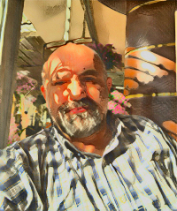

Resume: kem

Briefly About Me
This industrious and detail-oriented individual possesses an academic
background
encompassing American Culture and Literature as well as a Master's
degree in
International Relations, currently augmenting his expertise with ongoing
studies in
Computer Programming, while applying his meticulous and
punctual work ethic as a
proficient graphic designer, specialized in crafting educational
textbooks tailored
for diverse grade levels.
My Education
-
Bachelor of Arts - American Culture and Literature - Bilkent University
- Ankara - 2000
-
Master's Degree - International Relations - Gazi University - Ankara -
2019
-
Associate Degree - Computer Programing (Remote)- AUZEF - Istanbul
University - continues
Work Experience
- Graphic Designer
2010-Present - MEB
Ankara - Türkiye
- Designing educational textbooks
- Designing instutional magazines
-
designing products such as corporate reports, analysis, brochures,
infographics
- English Teacher
2001-2010 - MEB
Ankara - Türkiye
- Teaching English to diverse grade levels
- Preparing diverse European Union projects
- Translator - Eng/Tur
2000-2001 - TUIK
Ankara - Türkiye
- Translation of the European Union Acquis
- Preparation of the Turkish Statistical Yearbook
- Sending statistical data to eurostat
- Busboy
1992-1993 - Royal Caribbean Cruise Line
Miami - FL - The USA
My Skills
Software Skills
- Microsoft Office:
- Adobe InDesign:
- Adobe Photoshop:
- Adobe Illustrator:
- Adobe Premiere Pro:
Programming Skills
- C#:
- Phyton:
- HTML:
- CSS:
- JavaScript:
- Node.js:
LIKE TO DO |
WRITE ME